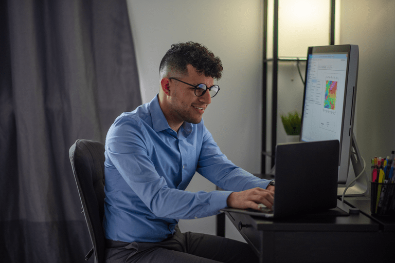

Trustworthy and Passionate professional providing solutions to research problems through a diverse lens that allows flexibility and optimize time
Current Projects
I am currently focused on taking my career to the next level in the areas of machine learning applications
for Geophysics, particularly mining exploration and crustal geophysics. I am open to contribute to any project within these liness
Since 2016, I have been working on developing a 3D Gravity model of Eastern Caribbean Boundary. This project started as my undergraduate thesis and it
is now soon to be completed in a peer-review article.
Updates
- July 2022, I am step closer to finish my web fundamentals class from BYU! In December 2022, I will be finishing my 1st certificate from the same university.
- July 2022, I had the wonderful opoortunity to mentor and supervise two geophysics interns in a field project.
- June 12th, It's been a year since I joined Abitibi Geophysics as one of their Project Geophysicists.
- June 14th, I attended the 2022 Drone applications for Geophysics conference in Vancouver
- On May 2022, I got my Geoscientist in training certificate from PEGNL. A Milestone in my career!
- December, 2021, I finished a programming in ptyhon class from Bringham Young University. Good things to come!.
- June 2021, I am excited to anounce that I will be joining Abitibi Geophysics, a mineral exploration company in Canada, as one of their field geophysicist.
- May 2019, I submitted my thesis to the Earth Science department from Memorial University.